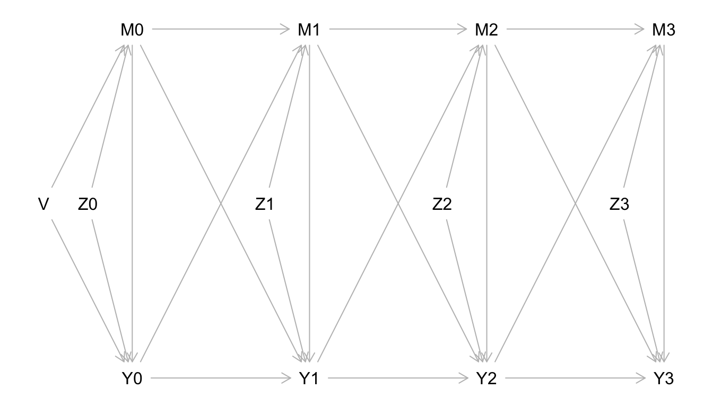
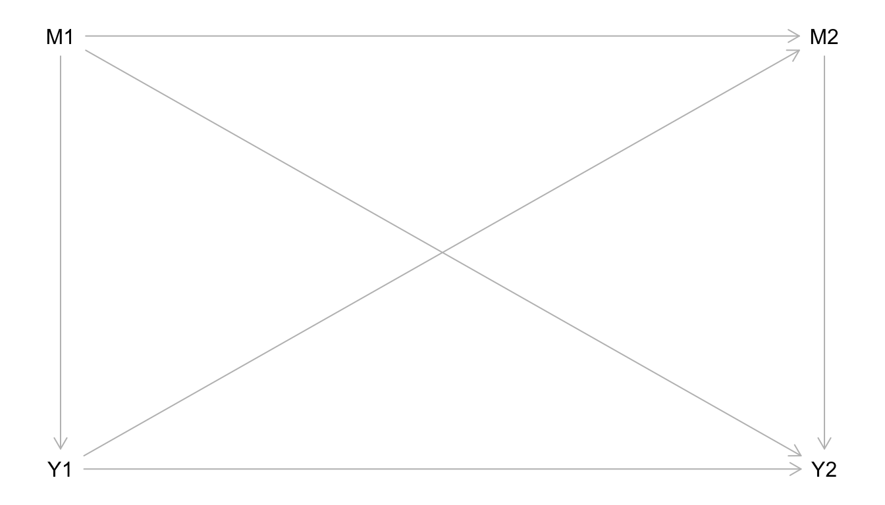
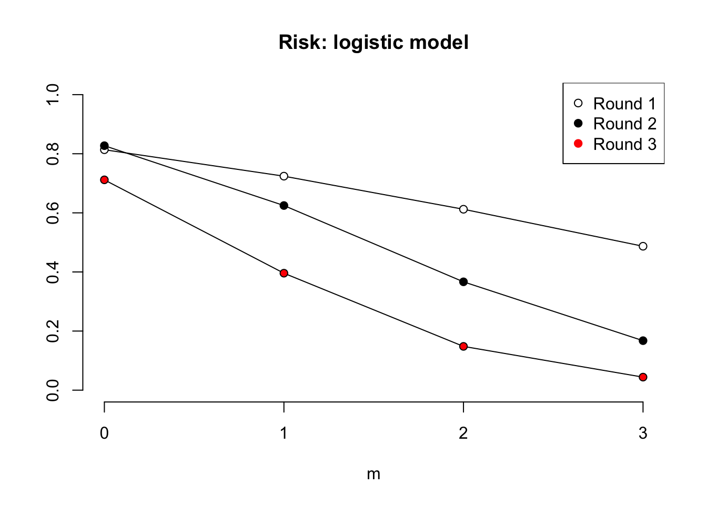
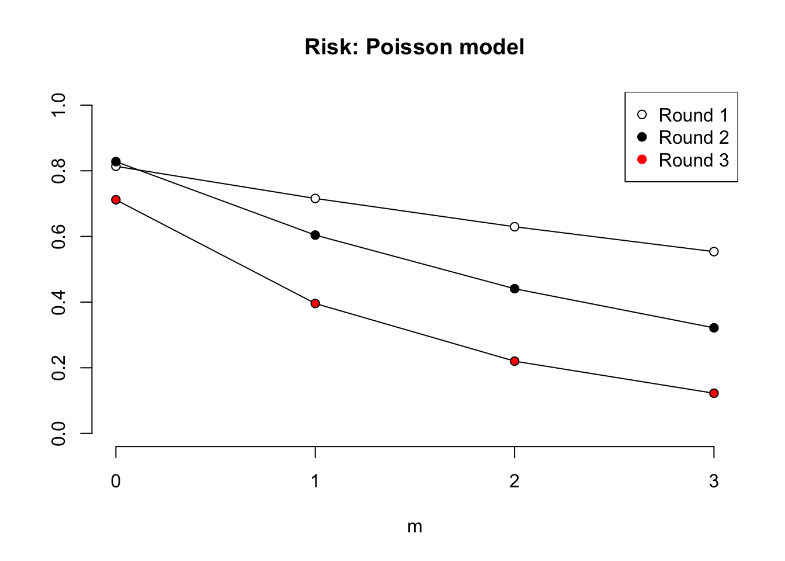
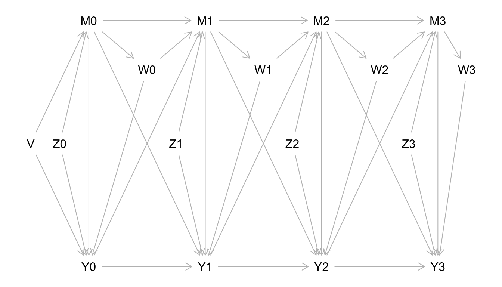

The aim of this analysis is to esimate the effect of mobility on healthcare use using a cohort of around 1500 female sex workers in northern Karnataka, in India. The women were enumerated at baseline and followed-up at three subsequent times. At all interviews, they were asked about how many places they had visited since the previous interview, and whether or not they had used healthcare in that time.
The challenge for this analysis is accounting for confounding by fixed factors, such as age in years, as well as varying factors such as income. Mobility itself may be affected by healthcare use at a previous time, and visa versa. Furthermore, the varying factors may be affected by mobility (exposure) and healthcare use (outcome) at previous times (not dealt with here).
The estimation challenge described in the previous paragraph can be shown diagrammatically in the following directed acyclical graph (DAG):

Mobility measured at baseline, and the three follow-up interviews is denoted as M0, M1, M3, and M4. Likewise, the healthcare-use outcome is shown as Y0, Y1, Y2, Y3. An arrow from mobility to healthcare during the same time period denotes the assumption that mobility can affect healthcare use during the same period. Arrows from each of mobility and healthcare to the other in the subsequent period denotes the assumption that prior mobility can affect healthcare at a future time, and visa versa.
Other variables are also shown in the DAG. Baseline and non-varying counfounders are denoted by V, with arrows to all subsequent rounds of invereiews ommitted for clarity. Varying confounders are labelled Z for each interview.
Before applying g-methods to a simplified version of the data, I want to try to replicate the even simpler analyses in Robins and Hernan’s book. For this, I’ll use just two rounds of data (interviews at 3 and 9 months), with ‘visited clinic’ as the outcome y, any moves m==1 and otherwise ==0, with time-varying confounder ‘owns a cellphone’ z. The first 6 rows of data are:
| ID | round | y | m | z |
|---|---|---|---|---|
| 1 | 1 | 1 | 0 | 0 |
| 1 | 2 | 1 | 0 | 0 |
| 2 | 1 | 1 | 0 | 0 |
| 2 | 2 | 1 | 0 | 0 |
| 3 | 1 | 0 | 1 | 0 |
| 3 | 2 | 0 | 1 | 0 |
The data on the confounding variable, z, will be ignored for now. The causal model can be shown in this simplified DAG:

The first table is the frequency of y==1 for levels of m and in round 1 and round 2. This is shown below. the final column is the probability that y==1.
knitr::kable(data2 %>%
group_by(round, m) %>%
summarise(`Y==1` = sum(y), `P[y==1]`=mean(y)), digits = 2)| round | m | Y==1 | P[y==1] |
|---|---|---|---|
| 1 | 0 | 466 | 0.65 |
| 1 | 1 | 168 | 0.35 |
| 2 | 0 | 504 | 0.76 |
| 2 | 1 | 169 | 0.31 |
We can see that in both rounds 1 and 2, the women who were mobile were around half as likely to have attended healthcare.
Since the analysis is of a cohort, the data can be reshaped ‘wide’ so that each row described each woman across the two rounds. In the table below, the number of women who used healthcare in round 2 is shown in the column y.2==1 for each level of mobility and healthcare use in both rounds (i.e. 2 * 2 * 2 = 8 groups). For this simplified stage in the analysis, I an focusing on the estimate of the effect of mobility on the outcome in round 2, with healthcare use in round 1 as a confounder of the effect of mobility in round 2 and simultaniously a mediator of the effect of mobility in round 1. This is the analysis done by Hérnan & Robins: a varying exposure and final outcome.
dw <- reshape(data = data2,direction = 'wide',v.names = c('y', 'm', 'z'),
timevar = 'round', idvar = 'ID')
dw <- dw[complete.cases(dw),]
t2 <- dw %>%
dplyr::group_by(m.1,y.1,m.2) %>%
summarise(N = max(row_number()), `Y.2==1`=sum(y.2), `Pr[Y]`=mean(y.2))
knitr::kable(t2, digits = 2)| m.1 | y.1 | m.2 | N | Y.2==1 | Pr[Y] |
|---|---|---|---|---|---|
| 0 | 0 | 0 | 166 | 83 | 0.50 |
| 0 | 0 | 1 | 80 | 8 | 0.10 |
| 0 | 1 | 0 | 423 | 377 | 0.89 |
| 0 | 1 | 1 | 43 | 29 | 0.67 |
| 1 | 0 | 0 | 40 | 17 | 0.42 |
| 1 | 0 | 1 | 269 | 40 | 0.15 |
| 1 | 1 | 0 | 33 | 25 | 0.76 |
| 1 | 1 | 1 | 135 | 88 | 0.65 |
By eye-balling the data in this table we can see that mobility and healthcare use in the previous period are both associated with higher frequency of healthcare use in round 2.
To apply the g-formula, we need to calculate the predicted probabilities of y.1 at the levels of m.1. These are shown below:
dw %>%
dplyr::group_by(m.1) %>%
summarise(`Pr[y.1==1]` = mean(y.1),
`Pr[y.1==0]`= 1-mean(y.1)) %>%
knitr::kable(digits = 2)| m.1 | Pr[y.1==1] | Pr[y.1==0] |
|---|---|---|
| 0 | 0.65 | 0.35 |
| 1 | 0.35 | 0.65 |
I can now apply g-formula (21.1 in Robins & Hernan book) to estimtate effect of m1==m2==0 vs m1==m2==1 on Y.2, taking into account the effect of m.1 on y.1, that in turn affects y.2.
\[ effect = E[Y.2^{m.1=1,m.2=1}|Y.1^{m.1}]-E[Y.2^{m.1=0,m.2=0}|Y.1^{m.1}] \]
The probabilities can be read off of the previous two tables. Unfold the code-block to view.
# E[Y when m1==m2==0]
e0_gf <- (.5 * .35) + (.89 * .65)
# E[Y when m1==m2==1]
e1_gf <- (.65 * .35) + (.15 * .65)
# Ratio
round(e1_gf/e0_gf,2)## [1] 0.43An alternative approach to accounting for the confounding/mediating effect of y.1 is to use inverse probability weighting. To do this, we need to calculate weights for each row, add these to the table, and divide to produce a pseudo-population of women. Estimates of effect calculated in the psuedo-population will be unbiased.
The table is repeated below with the pseudo-population, Np, on the left.
# Add weights to table
t3 <- as.data.frame(t2)
t3$W <- 0
t3$W[1] <- 1/((1-mean(dw$m.1)) * (1-mean(dw$m.2[dw$m.1==0 & dw$y.1==0])))
t3$W[2] <- 1/((1-mean(dw$m.1)) * (mean(dw$m.2[dw$m.1==0 & dw$y.1==0])))
t3$W[3] <- 1/((1-mean(dw$m.1)) * (1-mean(dw$m.2[dw$m.1==0 & dw$y.1==1])))
t3$W[4] <- 1/((1-mean(dw$m.1)) * (mean(dw$m.2[dw$m.1==0 & dw$y.1==1])))
t3$W[5] <- 1/((mean(dw$m.1)) * (1-mean(dw$m.2[dw$m.1==1 & dw$y.1==0])))
t3$W[6] <- 1/((mean(dw$m.1)) * (mean(dw$m.2[dw$m.1==1 & dw$y.1==0])))
t3$W[7] <- 1/((mean(dw$m.1)) * (1-mean(dw$m.2[dw$m.1==1 & dw$y.1==1])))
t3$W[8] <- 1/((mean(dw$m.1)) * (mean(dw$m.2[dw$m.1==1 & dw$y.1==1])))
# Create the pseudo population
t3$Np <- round(t3$N*t3$W,0)
knitr::kable(t3, digits = 2)| m.1 | y.1 | m.2 | N | Y.2==1 | Pr[Y] | W | Np |
|---|---|---|---|---|---|---|---|
| 0 | 0 | 0 | 166 | 83 | 0.50 | 2.47 | 411 |
| 0 | 0 | 1 | 80 | 8 | 0.10 | 5.14 | 411 |
| 0 | 1 | 0 | 423 | 377 | 0.89 | 1.84 | 778 |
| 0 | 1 | 1 | 43 | 29 | 0.67 | 18.10 | 778 |
| 1 | 0 | 0 | 40 | 17 | 0.42 | 19.26 | 770 |
| 1 | 0 | 1 | 269 | 40 | 0.15 | 2.86 | 770 |
| 1 | 1 | 0 | 33 | 25 | 0.76 | 12.69 | 419 |
| 1 | 1 | 1 | 135 | 88 | 0.65 | 3.10 | 419 |
The effect of mobility on the outcome can be estimated using the psuedo-population:
# Estiamte E[Y when m1==m2==0]
e0_IP <- .5 * 411/(411+778) + .89 * 778/(411+778)
# Estiamte E[Y when m1==m2==1]
e1_IP <- .65 * 419/(419 + 770) + .15 * 770/(419+770)
# Ratio
round(e1_IP/e0_IP,2)## [1] 0.43The estimates of the effect of mobility – RR of 0.43 – are the same with both methods.
The above exercise confirmed, to me, that the g-formula and IPW are understandable and consistant. However, this application was to a simplied scenario and only for the effect on the outcome measured at the final time point. I want to know the effect of mobility on healthcare access/use overall: Hérnan & Robins approach takes outcome to be at the end, so would need to fit model for each outcome (rounds 1,2,3). With panel data, there are a number of ways to specify the effect. Could focus on concurrent exposure, or cummulative, or whatever. Could these estimates be combined? E.g. the effect of one aditional trip on healthcare use probability across the period? G-methods can be used to contruct a marginal structural model with some functional form for the effect of mobility.
One option would be to continue the analysis above and try to esimate the effect of moving in all periods versus not moving at all on healthcare use for outcomes measured at all time points k. (N.N. the formulae are illustrative, not accurate!)
\[ effect = E[Y_k^{\bar{a}=\{1,1,1,1\}}|Y_{k-1}]-E[Y.k^{\bar{a}=\{0,0,0,0\}}|Y_{k-1}] \]
However, since there are not many women in these two conditions, it might be better to estimate some functional form and then produce predicted values. For this we will need a marginal structural model, of the form of (something like) this:
\[ E[Y^\bar{a}] = \mu_0 + \mu_1 \cdot cum_{-1}(\bar{a}) + \mu_2 \cdot cum(\bar{a})\]
The model will be fitted in the pseudo-population (e.g. weighted using the stablised weights) to account for confounding. Effect of each additional move, interacted with the round.
First I’m going to try this with the simplified data, for the effect of m2 on y2, controlling for y1, z1 by weighted for the inverse of the propensity of m2 according to those variables.
# First, fit a model for m2 to produce the predicted probabilities
m2_model <- glm(m.2 ~ m.1 + z.2 + y.1,
data=dw, family=binomial(link='logit'))
# Predicted probabilities, and non-stabalised weights
dw$pre.prob <- predict(m2_model, dw, type='response')
dw$w <- 1/dw$pre.prob
# Fit weighted logistic regression, adjusting for previous healthcare use
dw_weighted <- svydesign(id = ~ID, weights=~w, data=dw)
y2_model <- svyglm(y.2 ~ m.2, design=dw_weighted,
family=quasibinomial(link='logit'))
# Save the OR
or <- round(exp(summary(y2_model)$coefficients[2,1]),2)
# Quasi-poisson model
y2_model <- svyglm(y.2 ~ m.2, design=dw_weighted,
family=quasipoisson(link = "log"))
# Save the RR
rr <- round(exp(summary(y2_model)$coefficients[2,1]),2)This analysis produced an odds ratio of 0.14, and a risk ratio of 0.49.
Ok, now try with all four rounds. First, the complete data needs to be reshaped wide across rounds 0-3:
# Select data
dw4 <- reshape(data = data,
direction = 'wide',
v.names = c('y', 'm', 'z'),
timevar = 'round',
idvar = 'ID')
# Use complete data only
dw4$z.0 <- NULL
dw4 <- dw4[complete.cases(dw4),]
head(dw4)## ID y.0 m.0 y.1 m.1 z.1 y.2 m.2 z.2 y.3 m.3 z.3
## 1 1 1 0 1 0 0 1 0 0 1 0 0
## 5 2 1 0 1 0 0 1 0 0 1 0 0
## 9 3 1 1 0 1 0 0 1 0 0 1 0
## 13 5 1 0 1 0 1 1 0 1 1 0 1
## 17 6 1 0 1 0 0 0 0 0 1 0 0
## 21 7 0 1 1 0 0 0 1 0 1 1 0Next, we need to fit models for the probability of mobility at each round based on each prior confounder, and use these to compute predicted probabilities and the inverse weights.
# Models for mobility at each follow-up round
m3_model <- glm(m.3 ~ m.0+m.1+m.2+y.0+y.1+y.2+z.3,
data = dw4, family = binomial(link = 'logit'))
m2_model <- glm(m.2 ~ m.0+m.1+y.0+y.1+z.3,
data = dw4, family = binomial(link = 'logit'))
m1_model <- glm(m.1 ~ m.0+y.0+z.3,
data = dw4, family = binomial(link = 'logit'))
# Inverse of the predicted probabilities
dw4$m3 <- 1/(predict(m3_model, dw4, type='response'))
dw4$m2 <- 1/(predict(m2_model, dw4, type='response'))
dw4$m1 <- 1/(predict(m1_model, dw4, type='response'))
# Product of weights
dw4$w <- dw4$m3 * dw4$m2 * dw4$m1We can then fit structural model for cumulative exposure m on y.3, controlling for prior y:
dw4$m <- dw4$m.1 + dw4$m.2 + dw4$m.3
dw4_weighted <- svydesign(id=~ID, weights = ~w, data=dw4)
y3_model <- svyglm(y.3 ~ m , design=dw4_weighted,
family = quasibinomial(link='logit'))BUT, what really want to do is to combine the effects for outcomes measured at each time point. This means appending the data with the weights, and conducting the analysis with the outcome measured in rounds 0-3:
# Fit joint model across y.1, y.2, y.3?
dw4_3 <- dw4[,c('ID','y.3','m','w')]
dw4$w <- dw4$m2 * dw4$m1; dw4$m <- dw4$m.1 + dw4$m.2
dw4_2 <- dw4[,c('ID','y.2','m','w')]
dw4$w <- dw4$m1; dw4$m <- dw4$m.1
dw4_1 <- dw4[,c('ID','y.1','m','w')]
dw4_123 <- as.data.frame(mapply(c, dw4_3, dw4_2, dw4_1))
dw4_123 <- cbind(dw4_123, as.factor(rep(c(1,2,3), times=c(nrow(dw4),nrow(dw4),nrow(dw4)))))
colnames(dw4_123) <- c(colnames(dw4_123)[1:4], 'round')
# Logistic model
dw4_weighted <- svydesign(id=~ID, weights = ~w, data=dw4_123)
y_model <- svyglm(y.3 ~ m * round, design=dw4_weighted,
family = quasibinomial(link='logit'))
# Poisson model
y_model2 <- svyglm(y.3 ~ m * round, design=dw4_weighted,
family = quasipoisson(link='log'))We can then plot the results:
# Plot the results
m <- seq(0,3,1)
plot(m, main='Risk: logistic model',
predict(y_model, newdata=data.frame(round=as.factor(1), m=m), type="response"),
type="o",pch=21,bg="white",ylab="",ylim=c(0,1), bty="n", xaxp = c(0, 3, 3))
points(m,
predict(y_model,newdata=data.frame(round=as.factor(2),m=m),type="response"),
type="o",pch=21,bg="black")
points(m,
predict(y_model,newdata=data.frame(round=as.factor(3),m=m),type="response"),
type="o",pch=21,bg="red")
legend(x="topright",pch=21,col=c("black","black","red"),
pt.bg=c("white","black","red"),
legend=c("Round 1","Round 2","Round 3"))
# Bootstrap the entire procedure... # Plot the results
m <- seq(0,3,1)
plot(m, main='Risk: Poisson model',
predict(y_model2, newdata=data.frame(round=as.factor(1), m=m), type="response"),
type="o",pch=21,bg="white",ylab="",ylim=c(0,1), bty="n", xaxp = c(0, 3, 3))
points(m,
predict(y_model2,newdata=data.frame(round=as.factor(2),m=m),type="response"),
type="o",pch=21,bg="black")
points(m,
predict(y_model2,newdata=data.frame(round=as.factor(3),m=m),type="response"),
type="o",pch=21,bg="red")
legend(x="topright",pch=21,col=c("black","black","red"),
pt.bg=c("white","black","red"),
legend=c("Round 1","Round 2","Round 3"))
Now to bootstrap the entire procedure…
